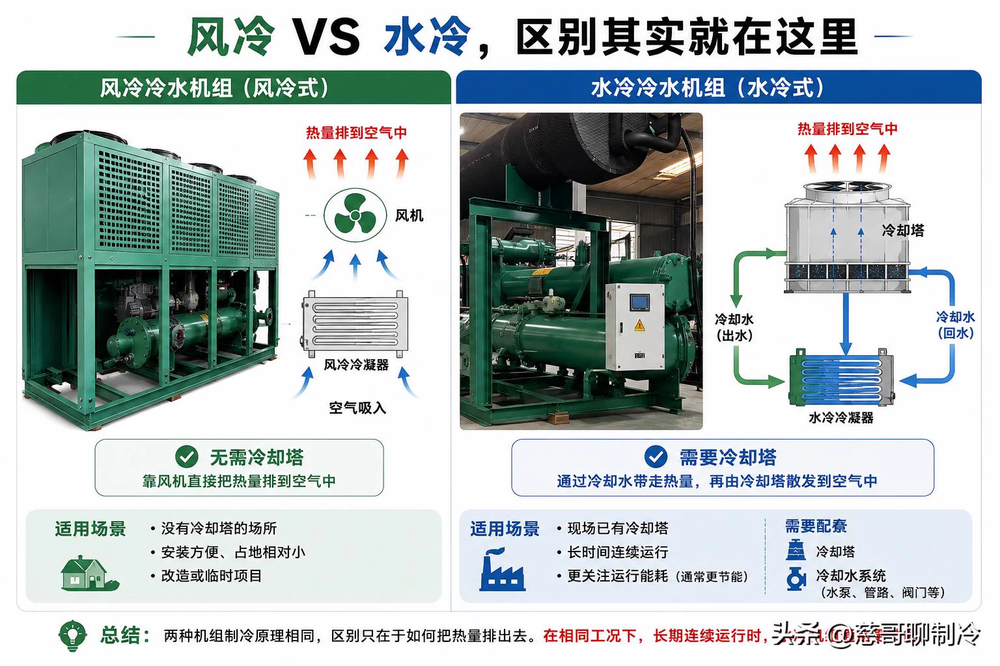
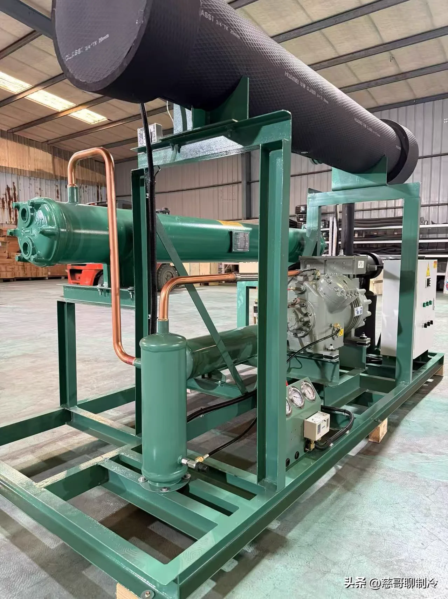

很多客户咨询冷水机组时，第一个问题就是：“风冷好，还是水冷好？”如果没有了解现场工况，我一般不会直接给答案。因为两者没有谁天然更好，关键还是看设备用在什么地方。
作用相同，排热方式不同
风冷和水冷的作用其实一样：把循环水降到设定温度，再利用冷水给设备或生产工艺降温。真正的区别不在制冷，而在热量怎么排出去。
风冷冷水机组利用风机，把冷凝器里的热量直接排到空气中，不需要配套冷却塔，安装相对简单，对现场条件要求较低。
水冷冷水机组利用冷却水，把冷凝器中的热量带到冷却塔，再由冷却塔散发到空气中。因此除了主机，还需要冷却塔、冷却水泵和循环管路。

一张表快速对比
对比项风冷水冷配套设备较少冷却塔、水泵、管路安装条件相对简单需要水系统和场地维护重点翅片与风机水质、结垢与冷却塔长期运行灵活省事工况适合时更节能
什么情况更适合风冷？
如果现场没有冷却塔，也没有合适的建塔条件；设备每天运行时间不长；希望安装更快、系统更简单，风冷通常更省事，后期维护也比较直接。
什么情况更适合水冷？
如果工厂已有冷却塔或具备建设条件，设备需要长期持续运行，并且重视长期能耗，在相同工况下，水冷机组通常更有优势。
先看全生命周期选型不能只比较主机价格，还要同时考虑配套工程、用水、维护、运行时长与电费。
做方案前，我通常先问四个问题
- 现场有没有冷却塔，或者有没有建设冷却塔的条件？
- 设备每天运行多久，是间歇使用还是连续运行？
- 需要的进出水温度、循环流量和制冷量分别是多少？
- 更重视前期投入、安装便利，还是长期运行成本？
这些问题清楚以后，再决定选风冷还是水冷，基本不会跑偏。先看工况，再选设备，比一开始就比较价格和品牌更重要。
交货时间为什么也不同？
很多风冷冷水机组采用标准配置，常用型号的生产周期相对稳定。水冷冷水机组则常采用双壳管结构，制冷量、出水温度、循环流量，以及蒸发器和冷凝器配置都要结合实际工况确定。

遇到非标工况，需要调整的内容更多，因此生产周期通常也更长。尤其壳管定制本身需要时间，做项目计划时要提前考虑。
最后的判断风冷还是水冷？先看工况，再选设备。把现场情况弄清楚，比急着比较价格和品牌更重要。
本文由阿杰原创，原载于今日头条「阿杰聊制冷」。查看原文